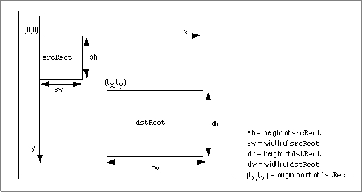
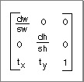

RectMatrix
TheRectMatrixfunction allows your application to create a matrix that performs a translate and scale operation as described by the relationship between two rectangles.pascal void RectMatrix (MatrixRecord *matrix, Rect *srcRect, Rect *dstRect);
matrix- Contains a pointer to a matrix structure. The
RectMatrixfunction updates the contents of this matrix so that the matrix describes a transformation from points in the rectangle specified by thesrcRectparameter to points in the rectangle specified by thedstRectparameter. The previous contents of the matrix are ignored.srcRect- Contains a pointer to the source rectangle.
dstRect- Contains a pointer to the destination rectangle.
DESCRIPTION
You specify the two rectangles; the function returns the appropriate matrix. Figure 2-43 shows how this matrix transforms the source image.Figure 2-43 Transforming an image with the
RectMatrixfunction
Calling the
RectMatrixfunction with the two rectangles shown in Figure 2-43 results in the matrix shown in Figure 2-44.Figure 2-44 Matrix created as a result of calling the
RectMatrixfunction
SEE ALSO
If you call theTransformRectfunction (described on page 2-328) and supply the matrix produced by theRectMatrixfunction along with the source rectangle you specified when you called theRectMatrixfunction, the result is equivalent to the destination rectangle you specified.